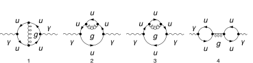

description = "Adler function, QCD, massless quarks, 2-loops";
If[ $FrontEnd === Null,
$FeynCalcStartupMessages = False;
Print[description];
];
If[ $Notebooks === False,
$FeynCalcStartupMessages = False
];
LaunchKernels[4];
$LoadAddOns = {"FeynArts", "FeynHelpers"};
<< FeynCalc`
$FAVerbose = 0;
$ParallelizeFeynCalc = True;
FCCheckVersion[10, 2, 0];
If[ToExpression[StringSplit[$FeynHelpersVersion, "."]][[1]] < 2,
Print["You need at least FeynHelpers 2.0 to run this example."];
Abort[];
]\text{FeynCalc }\;\text{10.2.1 (dev version, 2026-06-23 16:04:37 +02:00, d2d4541b). For help, use the }\underline{\text{online} \;\text{documentation},}\;\text{ visit the }\underline{\text{forum}}\;\text{ and have a look at the supplied }\underline{\text{examples}.}\;\text{ The PDF-version of the manual can be downloaded }\underline{\text{here}.}
\text{If you use FeynCalc in your research, please evaluate FeynCalcHowToCite[] to learn how to cite this software.}
\text{Please keep in mind that the proper academic attribution of our work is crucial to ensure the future development of this package!}
\text{FeynArts }\;\text{3.12 (27 Mar 2025) patched for use with FeynCalc, for documentation see the }\underline{\text{manual}}\;\text{ or visit }\underline{\text{www}.\text{feynarts}.\text{de}.}
\text{If you use FeynArts in your research, please cite}
\text{ $\bullet $ T. Hahn, Comput. Phys. Commun., 140, 418-431, 2001, arXiv:hep-ph/0012260}
\text{FeynHelpers }\;\text{2.1.0 (2026-06-17 11:21:04 +02:00, 1d1a414a). For help, use the }\underline{\text{online} \;\text{documentation},}\;\text{ visit the }\underline{\text{forum}}\;\text{ and have a look at the supplied }\underline{\text{examples}.}\;\text{ The PDF-version of the manual can be downloaded }\underline{\text{here}.}
\text{ If you use FeynHelpers in your research, please evaluate FeynHelpersHowToCite[] to learn how to cite this work.}
modelDir = FileNameJoin[{$UserBaseDirectory, "Applications", "FeynCalc", "Examples", "Models", "QCD-EPEM"}];FAPatch[PatchModelsOnly -> True, FAModelsDirectory -> modelDir];
(*Successfully patched FeynArts.*)Nicer typesetting
FCAttachTypesettingRule[mu, "\[Mu]"];
FCAttachTypesettingRule[nu, "\[Nu]"];We compute the hadronic vacuum polarization from a single massless quark flavor. The full Adler function is obtained by summing over all active quark flavors.
diags = InsertFields[CreateTopologies[2, 1 -> 1,
ExcludeTopologies -> {Tadpoles}], {V[1]} -> {V[1]},
InsertionLevel -> {Particles}, Model -> FileNameJoin[{modelDir, "QCD-EPEM"}],
GenericModel -> FileNameJoin[{modelDir, "QCD-EPEM"}],
ExcludeParticles -> {F[4], F[3, {2 | 3}], V[1]}];
Paint[diags, ColumnsXRows -> {4, 1}, Numbering -> Simple,
SheetHeader -> None, ImageSize -> 128 {4, 1}];
masslessSunrise = Get[FileNameJoin[{$FeynCalcDirectory, "Examples", "MasterIntegrals", "Mincer", "prop2Lv1xFx10101x00000xxEp999x.m"}]]\left\{G^{\text{prop2Lv1}}(1,0,1,0,1)\to -\frac{e^{2 \gamma \;\text{ep}} \Gamma (1-\text{ep})^3 \Gamma (2 \;\text{ep}-1) (-\text{qq}-i \;\text{eta})^{1-2 \;\text{ep}}}{\Gamma (3-3 \;\text{ep})},\left\{\text{FCTopology}\left(\text{prop2Lv1},\left\{\frac{1}{\text{k1}^2},\frac{1}{\text{k2}^2},\frac{1}{(\text{k1}-\text{k2})^2},\frac{1}{(\text{k1}-q)^2},\frac{1}{(\text{k2}-q)^2}\right\},\{\text{k1},\text{k2}\},\{q\},\{\text{Hold}[\text{SPD}][q,q]\to \;\text{qq}\},\{\}\right)\right\}\right\}
masslessBubble = Get[FileNameJoin[{$FeynCalcDirectory, "Examples", "MasterIntegrals", "Mincer", "prop1L00.m"}]]\left\{G^{\text{prop1L00}}(1,1)\to \frac{e^{\gamma \;\text{ep}} \Gamma (1-\text{ep})^2 \Gamma (\text{ep}) (-\text{qq}-i \;\text{eta})^{-\text{ep}}}{\Gamma (2-2 \;\text{ep})},\left\{\text{FCTopology}\left(\text{prop1L00},\left\{\frac{1}{(l^2+i \eta )},\frac{1}{((l-q)^2+i \eta )}\right\},\{l\},\{q\},\{\text{Hold}[\text{Pair}][q,q]\to \;\text{qq}\},\{\}\right)\right\}\right\}
The 1/(2Pi)^D prefactor per loop is implicit. At 2-loops in massless QCD we don’t need to renormalize the divergent correlator to obtain Adler function
An explicit color sum is present only in the last diagram that, however, vanishes.
amp[0] = FCFAConvert[CreateFeynAmp[diags, PreFactor -> 1,
Truncated -> True], IncomingMomenta -> {p},
OutgoingMomenta -> {q}, LorentzIndexNames -> {mu, nu},
LoopMomenta -> {k1, k2}, UndoChiralSplittings -> True,
ChangeDimension -> D, List -> True, SMP -> True, DropSumOver -> True,
FinalSubstitutions -> {SMP["m_u"] -> 0}] \text{FCFAConvert: Affected diagrams: }\{\{4,1\},\{4,2\},\{4,3\},\{4\},\{\}\}
\left\{\frac{i g^{\text{Lor3}\;\text{Lor4}} \;\text{tr}\left((\gamma \cdot (\text{k2}-q)).\left(-\frac{2}{3} i \;\text{e} \gamma ^{\nu }\right).(\gamma \cdot \;\text{k2}).\left(-i g_s \gamma ^{\text{Lor4}} T_{\text{Col4}\;\text{Col3}}^{\text{Glu3}}\right).(-(\gamma \cdot \;\text{k1})).\left(-\frac{2}{3} i \;\text{e} \gamma ^{\mu }\right).(\gamma \cdot (-\text{k1}-q)).\left(-i g_s \gamma ^{\text{Lor3}} T_{\text{Col3}\;\text{Col4}}^{\text{Glu3}}\right)\right)}{\text{k1}^2.\text{k2}^2.(\text{k1}+\text{k2})^2.(\text{k2}-q)^2.(\text{k1}+q)^2},\frac{i g^{\text{Lor3}\;\text{Lor4}} \;\text{tr}\left((\gamma \cdot (\text{k1}-q)).\left(-\frac{2}{3} i \;\text{e} \gamma ^{\nu }\right).(\gamma \cdot \;\text{k1}).\left(-\frac{2}{3} i \;\text{e} \gamma ^{\mu }\right).(\gamma \cdot (\text{k1}-q)).\left(-i g_s \gamma ^{\text{Lor4}} T_{\text{Col3}\;\text{Col4}}^{\text{Glu3}}\right).(\gamma \cdot \;\text{k2}).\left(-i g_s \gamma ^{\text{Lor3}} T_{\text{Col4}\;\text{Col3}}^{\text{Glu3}}\right)\right)}{\text{k1}^2.\text{k2}^2.(\text{k1}-q)^4.(-\text{k1}+\text{k2}+q)^2},\frac{i g^{\text{Lor3}\;\text{Lor4}} \;\text{tr}\left((\gamma \cdot (\text{k1}-q)).\left(\frac{2}{3} i \;\text{e} \gamma ^{\nu }\right).(\gamma \cdot \;\text{k1}).\left(\frac{2}{3} i \;\text{e} \gamma ^{\mu }\right).(\gamma \cdot (\text{k1}-q)).\left(i g_s \gamma ^{\text{Lor4}} T_{\text{Col4}\;\text{Col3}}^{\text{Glu3}}\right).(\gamma \cdot \;\text{k2}).\left(i g_s \gamma ^{\text{Lor3}} T_{\text{Col3}\;\text{Col4}}^{\text{Glu3}}\right)\right)}{\text{k1}^2.\text{k2}^2.(\text{k1}-q)^4.(-\text{k1}+\text{k2}+q)^2},-\frac{i g^{\text{Lor3}\;\text{Lor4}} \;\text{tr}\left((-(\gamma \cdot \;\text{k1})).\left(-\frac{2}{3} i \;\text{e} \gamma ^{\nu }\right).(\gamma \cdot (q-\text{k1})).0\right) \;\text{tr}\left((-(\gamma \cdot \;\text{k2})).\left(-\frac{2}{3} i \;\text{e} \gamma ^{\mu }\right).(\gamma \cdot (-\text{k2}-q)).0\right)}{q^2 \;\text{k1}^2.(\text{k1}-q)^2 \;\text{k2}^2.(\text{k2}+q)^2}\right\}
We keep q^2 = qq as a free symbol so that we can differentiate Pi(q^2) later.
FCClearScalarProducts[];
SPD[q] = qq;projector = MTD[mu, nu]/ ((D - 1) qq)\frac{g^{\mu \nu }}{(D-1) \;\text{qq}}
amp[1] = (eQ^2 (3/2)^2 projector amp[0]) // Contract[#, FCParallelize -> True] & //
DiracSimplify[#, FCParallelize -> True] & //
SUNSimplify[#, FCParallelize -> True] &\left\{-\left(\left(4 i (2-D) \;\text{e}^2 \;\text{eQ}^2 C_A C_F g_s^2 \left(4 (\text{k1}\cdot \;\text{k2})^2+D \;\text{k2}^2 (\text{k1}\cdot q)-D \;\text{k1}^2 (\text{k2}\cdot q)-D \;\text{qq} (\text{k1}\cdot \;\text{k2})+D \;\text{k1}^2 \;\text{k2}^2-4 (\text{k1}\cdot \;\text{k2}) (\text{k1}\cdot q)+4 (\text{k1}\cdot \;\text{k2}) (\text{k2}\cdot q)-4 \;\text{k2}^2 (\text{k1}\cdot q)+4 \;\text{k1}^2 (\text{k2}\cdot q)-4 (\text{k1}\cdot q) (\text{k2}\cdot q)+4 \;\text{qq} (\text{k1}\cdot \;\text{k2})-4 \;\text{k1}^2 \;\text{k2}^2\right)\right)/\left((1-D) \;\text{qq} \;\text{k1}^2.\text{k2}^2.(\text{k1}+\text{k2})^2.(\text{k2}-q)^2.(\text{k1}+q)^2\right)\right),\frac{4 i (2-D)^2 \;\text{e}^2 \;\text{eQ}^2 C_A C_F g_s^2 \left(2 \;\text{k1}^2 (\text{k2}\cdot q)-2 (\text{k1}\cdot q) (\text{k2}\cdot q)+\text{qq} (\text{k1}\cdot \;\text{k2})-\text{k1}^2 (\text{k1}\cdot \;\text{k2})\right)}{(1-D) \;\text{qq} \;\text{k1}^2.\text{k2}^2.(\text{k1}-q)^4.(\text{k1}-\text{k2}-q)^2},\frac{4 i (2-D)^2 \;\text{e}^2 \;\text{eQ}^2 C_A C_F g_s^2 \left(2 \;\text{k1}^2 (\text{k2}\cdot q)-2 (\text{k1}\cdot q) (\text{k2}\cdot q)+\text{qq} (\text{k1}\cdot \;\text{k2})-\text{k1}^2 (\text{k1}\cdot \;\text{k2})\right)}{(1-D) \;\text{qq} \;\text{k1}^2.\text{k2}^2.(\text{k1}-q)^4.(\text{k1}-\text{k2}-q)^2},0\right\}
{amp[2], topos} = FCLoopFindTopologies[amp[1], {k1, k2},
FCParallelize -> True, Names -> alderTopos2L];\text{FCLoopFindTopologies: Number of the initial candidate topologies: }2
\text{FCLoopFindTopologies: Number of the identified unique topologies: }2
\text{FCLoopFindTopologies: Number of the preferred topologies among the unique topologies: }0
\text{FCLoopFindTopologies: Number of the identified subtopologies: }0
\text{FCLoopFindTopologies: }\;\text{Final number of found topologies: }2
subTopos = FCLoopFindSubtopologies[topos];\text{FCLoopFindSubtopologies: }\;\text{Final number of found subtopologies: }4
mappings = FCLoopFindTopologyMappings[topos, PreferredTopologies -> subTopos, FCParallelize -> True];\text{FCLoopFindIntegralMappings: }\;\text{Final number of found mappings: }2
\text{FCLoopFindTopologyMappings: }\;\text{Found }1\text{ mapping relations }
\text{FCLoopFindTopologyMappings: }\;\text{Final number of independent topologies: }1
AbsoluteTiming[ampReduced = FCLoopTensorReduce[amp[2], topos,
FCParallelize -> True];]\{0.170046,\text{Null}\}
AbsoluteTiming[ampPreFinal = FCLoopApplyTopologyMappings[ampReduced,
mappings, FCParallelize -> True];]\{0.073369,\text{Null}\}
ints = Cases2[ampPreFinal, GLI]\left\{G^{\text{alderTopos2L1}}(-1,1,1,1,1),G^{\text{alderTopos2L1}}(0,0,1,1,1),G^{\text{alderTopos2L1}}(0,0,2,0,1),G^{\text{alderTopos2L1}}(0,0,2,1,0),G^{\text{alderTopos2L1}}(0,1,0,1,1),G^{\text{alderTopos2L1}}(0,1,1,0,1),G^{\text{alderTopos2L1}}(0,1,1,1,0),G^{\text{alderTopos2L1}}(0,1,1,1,1),G^{\text{alderTopos2L1}}(0,1,2,0,1),G^{\text{alderTopos2L1}}(0,1,2,1,0),G^{\text{alderTopos2L1}}(1,0,0,1,1),G^{\text{alderTopos2L1}}(1,0,1,0,1),G^{\text{alderTopos2L1}}(1,0,1,1,0),G^{\text{alderTopos2L1}}(1,0,1,1,1),G^{\text{alderTopos2L1}}(1,1,0,0,1),G^{\text{alderTopos2L1}}(1,1,0,1,0),G^{\text{alderTopos2L1}}(1,1,0,1,1),G^{\text{alderTopos2L1}}(1,1,1,-1,1),G^{\text{alderTopos2L1}}(1,1,1,0,0),G^{\text{alderTopos2L1}}(1,1,1,0,1),G^{\text{alderTopos2L1}}(1,1,1,1,0),G^{\text{alderTopos2L1}}(1,1,1,1,1)\right\}
dir = FileNameJoin[{$TemporaryDirectory, "Reduction-2L-Adler"}];
Quiet[CreateDirectory[dir]];KiraCreateJobFile[mappings[[2]], ints, dir];KiraCreateIntegralFile[ints, mappings[[2]], dir];\text{KiraCreateIntegralFile: Number of loop integrals: }22
KiraCreateConfigFiles[mappings[[2]], ints, dir,
KiraMassDimensions -> {qq -> 2}]\left( \begin{array}{cc} \;\text{/tmp/Reduction-2L-Adler/alderTopos2L1/config/integralfamilies.yaml} & \;\text{/tmp/Reduction-2L-Adler/alderTopos2L1/config/kinematics.yaml} \\ \end{array} \right)
KiraRunReduction[dir, mappings[[2]],
KiraBinaryPath -> FileNameJoin[{$HomeDirectory, ".local", "bin", "kira"}],
KiraFermatPath -> FileNameJoin[{$HomeDirectory, "bin", "ferl64", "fer64"}]]\{\text{True}\}
reductionTable = KiraImportResults[mappings[[2]], dir] // Flatten;resPreFinal = Collect2[ampPreFinal /. Dispatch[reductionTable],
GLI, FCParallelize -> True]\left\{\frac{2 i (D-2) \left(D^2-7 D+16\right) \;\text{e}^2 \;\text{eQ}^2 C_A C_F g_s^2 G^{\text{alderTopos2L1}}(1,1,1,0,1)}{(D-4) (D-1)}-\frac{4 i (D-2) \left(D^3-6 D^2+20 D-32\right) \;\text{e}^2 \;\text{eQ}^2 C_A C_F g_s^2 G^{\text{alderTopos2L1}}(1,0,1,1,0)}{(D-4)^2 (D-1) \;\text{qq}},-\frac{2 i (D-2)^3 \;\text{e}^2 \;\text{eQ}^2 C_A C_F g_s^2 G^{\text{alderTopos2L1}}(1,0,1,1,0)}{(D-4) (D-1) \;\text{qq}},-\frac{2 i (D-2)^3 \;\text{e}^2 \;\text{eQ}^2 C_A C_F g_s^2 G^{\text{alderTopos2L1}}(1,0,1,1,0)}{(D-4) (D-1) \;\text{qq}},0\right\}
mastersPre = Cases2[resPreFinal, GLI]\left\{G^{\text{alderTopos2L1}}(1,0,1,1,0),G^{\text{alderTopos2L1}}(1,1,1,0,1)\right\}
FCClearScalarProducts[]
factorizingRules = FCLoopCreateFactorizingRules[mastersPre, mappings[[2]]]\text{FCLoopFindIntegralMappings: }\;\text{Final number of found mappings: }2
\text{FCLoopCreateFactorizingRules: }\;\text{Number of factorizing integrals: }1
\text{FCLoopCreateFactorizingRules: }\;\text{Number of simpler integrals: }1
\left( \begin{array}{c} G^{\text{alderTopos2L1}}(1,1,1,0,1)\to G^{\text{loopint1}}(1,1)^2 \\ G^{\text{loopint1}}(1,1) \\ \;\text{FCTopology}\left(\text{loopint1},\left\{\frac{1}{(\text{k2}^2+i \eta )},\frac{1}{((\text{k2}-q)^2+i \eta )}\right\},\{\text{k2}\},\{q\},\left\{q^2\to \;\text{qq}\right\},\{\}\right) \\ \end{array} \right)
integralMappings = FCLoopFindIntegralMappings[Cases2[{mastersPre /. factorizingRules[[1]]}, GLI],
Join[mappings[[2]], masslessBubble[[2]], masslessSunrise[[2]], factorizingRules[[3]]], PreferredIntegrals -> {masslessBubble[[1]][[1]],
masslessSunrise[[1]][[1]]}, FCParallelize -> True]\text{FCLoopFindIntegralMappings: }\;\text{Final number of found mappings: }2
\left( \begin{array}{cc} G^{\text{loopint1}}(1,1)\to G^{\text{prop1L00}}(1,1) & G^{\text{alderTopos2L1}}(1,0,1,1,0)\to G^{\text{prop2Lv1}}(1,0,1,0,1) \\ G^{\text{prop1L00}}(1,1) & G^{\text{prop2Lv1}}(1,0,1,0,1) \\ \end{array} \right)
resFinal = Collect2[Total[resPreFinal] /. factorizingRules[[1]] /. Dispatch[integralMappings[[1]]],
GLI, FCParallelize -> True]\frac{2 i (D-2) \left(D^2-7 D+16\right) \;\text{e}^2 \;\text{eQ}^2 C_A C_F g_s^2 G^{\text{prop1L00}}(1,1)^2}{(D-4) (D-1)}-\frac{8 i (D-3) (D-2) \left(D^2-4 D+8\right) \;\text{e}^2 \;\text{eQ}^2 C_A C_F g_s^2 G^{\text{prop2Lv1}}(1,0,1,0,1)}{(D-4)^2 (D-1) \;\text{qq}}
Our master integrals are calculated using the standard multiloop normalization. To convert it back to the textbook normalization we need to multiply by I*(4 Pi)^(ep-2) per loop
prefAdler = -I 12 Pi^2 qq-12 i \pi ^2 \;\text{qq}
piFunc = ((I*(4*Pi)^(-2 + ep))^2 resFinal) /. masslessBubble[[1]] /. masslessSunrise[[1]] //
FCReplaceD[#, D -> 4 - 2 ep] & // Series[#, {ep, 0, 0}] & // Normal //
ReplaceAll[#, Log[-qq - I eta] -> Log[qq] - I Pi] & // ReplaceAll[#, eta -> 0] & //
Collect2[#, ep, qq] &-\frac{i \;\text{e}^2 \;\text{eQ}^2 C_A C_F g_s^2}{128 \pi ^4 \;\text{ep}}+\frac{i \;\text{e}^2 \;\text{eQ}^2 C_A C_F g_s^2 \log (\text{qq})}{64 \pi ^4}+\frac{\text{e}^2 \;\text{eQ}^2 C_A C_F g_s^2 (-25 i+18 \pi -18 i \log (4 \pi )-14 i \psi ^{(2)}(1)+32 i \psi ^{(2)}(2)-54 i \psi ^{(2)}(3))}{1152 \pi ^4}
This expression is to be summed over the number of active quark flavors, where eQ should be replaced by the charge of the current quark
adlerFunction = SUNSimplify[prefAdler D[piFunc, qq] /. qq -> -QQ, SUNNToCACF -> False]-\frac{3 \;\text{e}^2 \;\text{eQ}^2 \left(1-N^2\right) g_s^2}{32 \pi ^2}
Normalizing the NLO correction to the LO one we find
adlerFunctionNLO = adlerFunction/(eQ^2*SUNN*SMP["e"]^2) // SUNSimplify\frac{3 C_F g_s^2}{16 \pi ^2}
```mathematica knownResult = (3CFSMP[“g_s”]^2)/(16*Pi^2); FCCompareResults[adlerFunctionNLO, knownResult, Text -> {“to K. Chetyrkin, arXiv:2206.12948, Eq. (1):”, “CORRECT.”, “WRONG!”}, Interrupt -> {Hold[Quit[1]], Automatic}]; Print[“Time used:”, Round[N[TimeUsed[], 4], 0.001], ” s.”];
```mathematica
\text{$\backslash $tCompare to K. Chetyrkin, arXiv:2206.12948, Eq. (1):} \;\text{CORRECT.}
\text{$\backslash $tCPU Time used: }38.186\text{ s.}